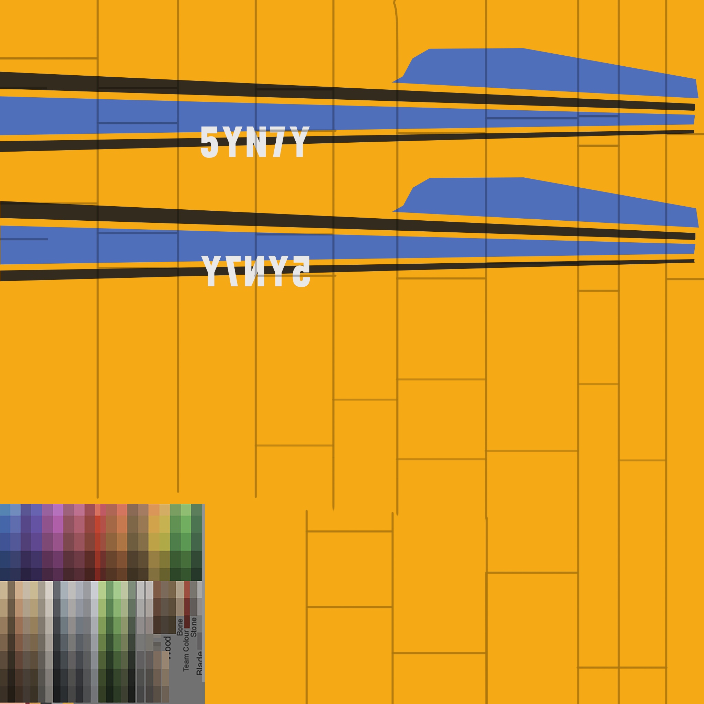
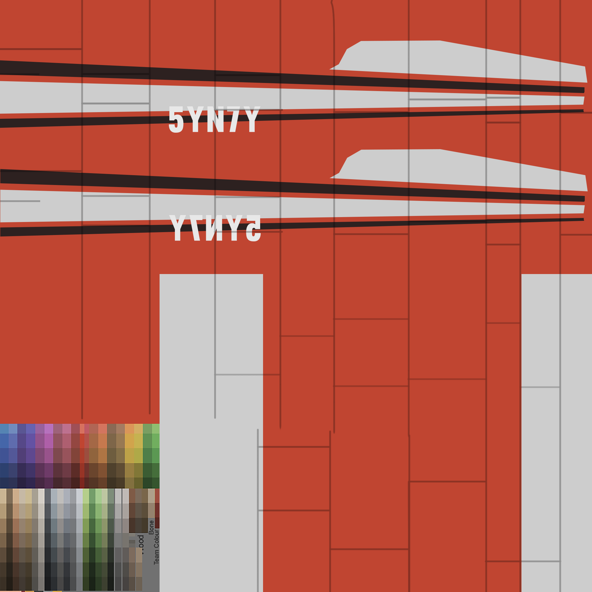
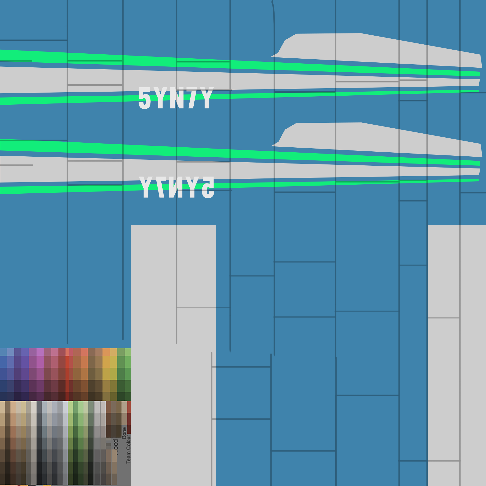

Plaster / Stucco
Good default cottage wall. Subtle enough for the existing low-poly style.
Poly Haven sourceExternal material textures applied to toy-scale Three.js cottages, plus local assets currently present in models/.
Good default cottage wall. Subtle enough for the existing low-poly style.
Poly Haven sourceActual preview textures from the Architextures brick category.
Rough red brick for richer town, wall, and manor variants.
Architextures sourceBetter suited to paths, courtyards, plazas, and roof accents.
Architextures sourceSame real texture style, tinted toward Tiny World palette variants.
Architextures categoryBrick materials from Poly Haven assets, using direct diffuse texture URLs.
Weathered red sandstone brick for industrial or baked urban walls.
Poly Haven sourceMore readable at toy scale for thumbnails and small walls.
Poly Haven brick categoryA23D has a large PBR texture catalog with material categories we can mine for terrain and object surface directions.
The repo currently has three plane atlas PNGs. These are already aligned to the stunt plane GLB and are not general wall textures.



models/stunt_plane.glb is a 259 KB GLB with named prop, flap, wheel, glass, and body nodes.models/kenney_car-kit and models/kenney_graveyard-kit_5.0 have directory shells but no extracted model files.